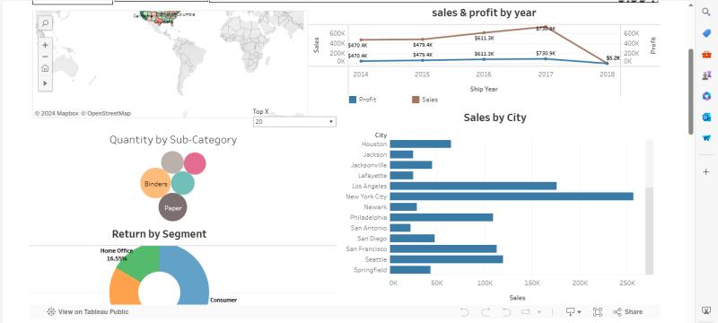

Welcome to my personal portfolio website!
I am a graduate in Informatics Management at AMIK Citra Buana Indonesia, with experience as a spare parts administrator and a strong interest in Information Technology, particularly in data. I have skills in data processing, information system management, and data analysis to support data driven decision making. I am passionate about building a career in data and am eager to contribute to the company.
PT Tirta Investama | Dec 2023 - March 2024
Diploma in Informatics Management | 2021 - 2024
AMIK Citra Buana Indonesia | 2021 - 2022
Event Campus AMIK Citra Buana Indonesia | 2023 - 2023
PORTOFOLIO VISUALISASI PENJUALAN DARI TAHUN 2003 - 2005.
Management System Incoming Sparepart.
Weather Analysis Data.
image classification.
Dashboard Superstore.
Analysis Trend Mudik 2025.